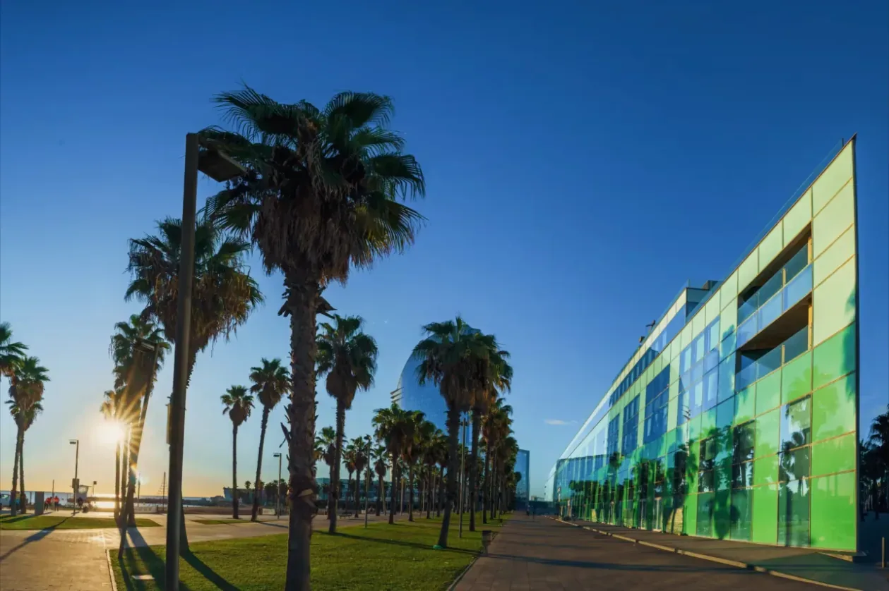
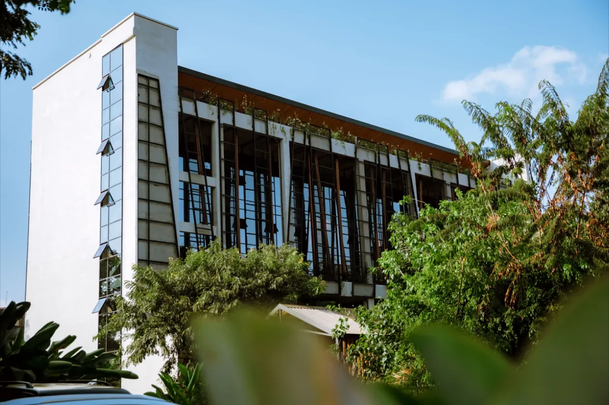
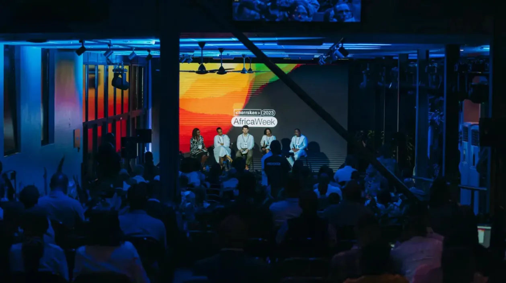

Visual identity & film
Norrsken Foundation
About the project
Norrsken is a non-profit impact ecosystem of Houses, funds and founders, from Stockholm to Kigali.
David was part of creating Norrsken and its visual expression, shaped its visual DNA and led its video work.


